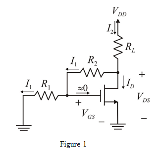

Refer to Figure P5.124 in the textbook for the circuits (a) and (b).
The equation for transconductance is,

Rearrange the equation as follows:
Therefore, overdrive voltage is, .
Refer to Figure P5.124 in the textbook for the circuits (a) and (b).
The equation for transconductance is,
Rearrange the equation as follows:
Therefore, overdrive voltage is, .
The equation for drain current is,
Rearrange the equation as follows:
Therefore, the value of  is .
is .
The output resistance of the transistor is,

Rearrange the equation as follows:
Therefore, the device parameter voltage is, .
Circuit diagram under dc conditions is same for the two circuits (a) and (b). The dc circuit with current and voltage representation is shown in Figure 1.

From the circuit, the gate to source voltage is,
 …… (1)
…… (1)
The drain-to-source voltage is,
…… (2)
The overdrive voltage is,
Substitute for  in equation (1).
in equation (1).
 in equation (2).
in equation (2).
Apply Kirchhoff’s current law at drain node.
Apply Kirchhoff’s voltage law to the drain loop.
Rearrange the equation.
Substitute for  in the equation.
in the equation.
Therefore, supply voltage is.